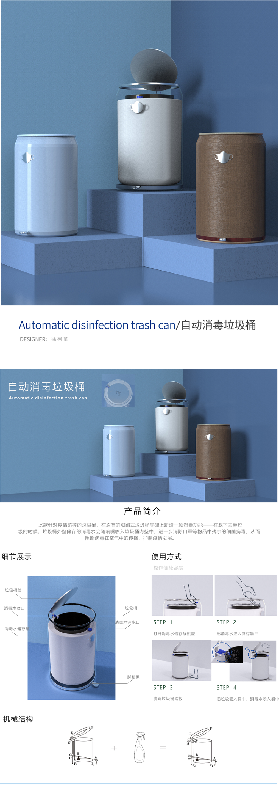
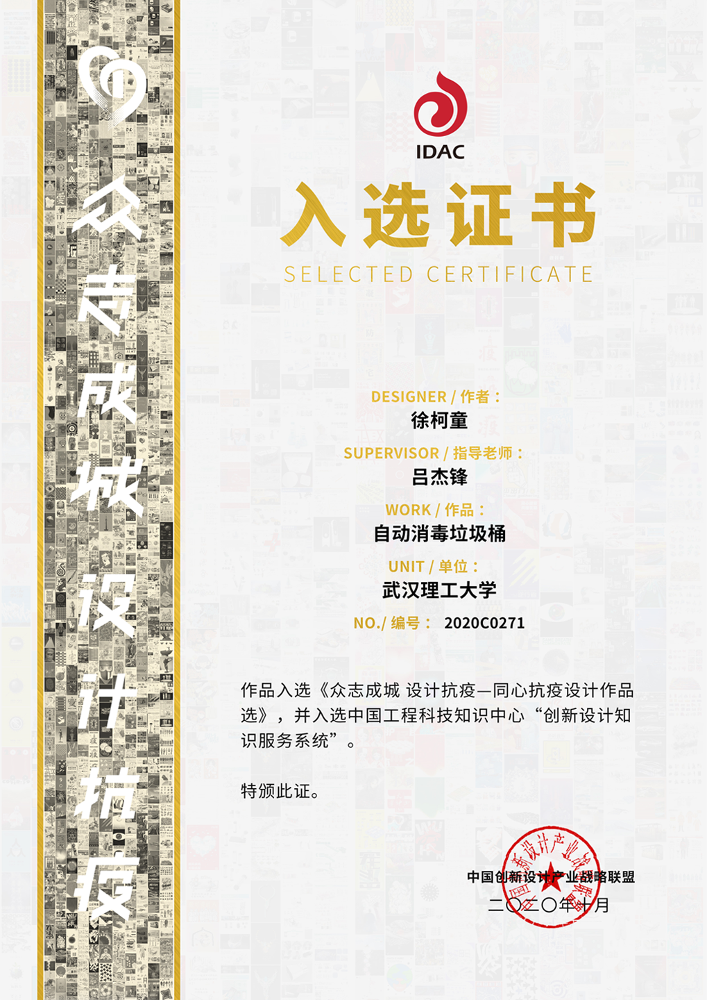

Automatic disinfection trash can
In response to COVID-19, this automatic disinfection trash can was designed for the recycling of people's masks.
A disinfectant water storage tank is added to the original foot-operated trash can. Using the knowledge of mechanical structure, a device is set up to automatically spray disinfectant water when people throw garbage.
It not only avoids the problem of people touching the trash can with hands, but also effectively kills bacteria and viruses. The cost is controllable and the operability is strong.
In October，2020,
The works were selected into the "Selected Works of Anti-epidemic Anti-epidemic Design Works Together", and were selected into the "Innovative Design Knowledge Service System" of China Engineering Science and Technology Knowledge Center.

Designer: Ketong Xu Instructor: Dr. Jiefeng Lv /Professor Jiefeng Lv